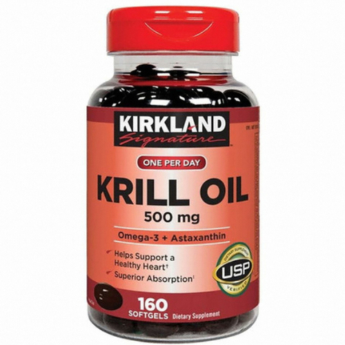
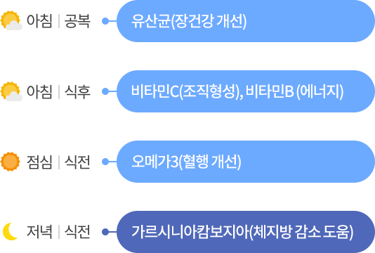

AI건강리뷰 메인
- AI분석
- AI비교
분석중
안전성 확인중
잠시만 기다려주세요.인공지능이 분석 중입니다.
인공지능 핫키워드 분석
지금 먹고 있는 영양제를 입력해보세요.
소셜 리뷰 기반 인공지능 분석 결과를 안내해드립니다.
요즘 직장인 필수템!
밀크씨슬계의 가성비 甲을 찾아라!
인공지능의 비교 결과를 확인해보세요.
-
 ******씨슬
******씨슬
리뷰 1,375건
-

*****모닝
리뷰 9,999건
건강기능식품 궁합시간표
내가 먹는 건강기능식품의 인공지능 성분 궁합과
추천 시간표를 확인해 보세요.
비타민C 외 4종의 성분궁합 결과

건강매거진
인공지능이 큐레이션한 인기 콘텐츠 확인하세요.